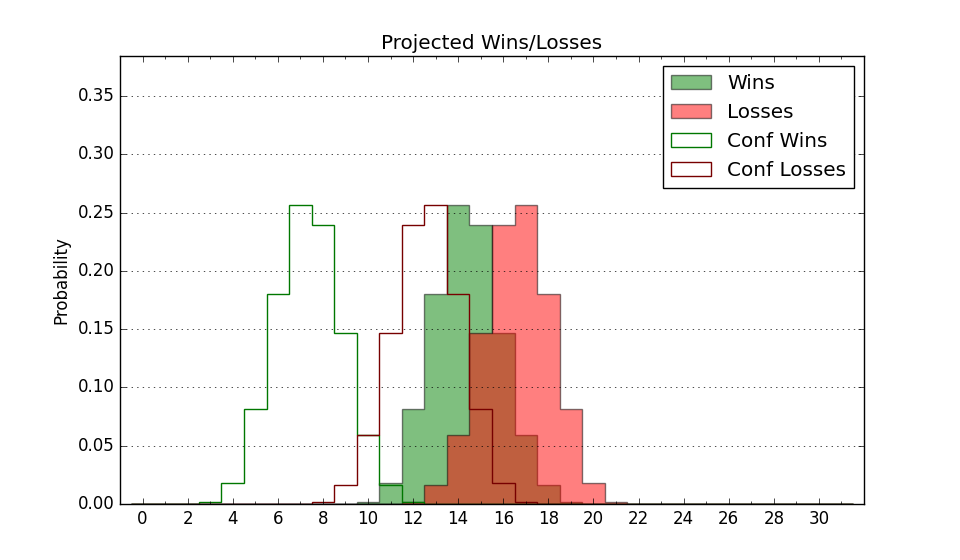

| Home | Game Probabilities | Conferences | Preseason Predictions | Odds Charts | NCAA Tournament |
| City: | Fort Worth, Texas | |
| Conference: | Big 12 (11th)
| |
| Record: | 3-6 (Conf) 10-10 (Overall) | |
| Ratings: | Comp.: 11.5 (81st) Net: 11.4 (82nd) Off: 106.5 (162nd) Def: 95.1 (38th) SoR: 6.1 (77th) |
| Remaining | ||||||
|---|---|---|---|---|---|---|
| Date | Opponent | Win Prob | Pred. | |||
| 2/2 | Colorado (99) | 73.4% | W 71-64 | |||
| 2/5 | West Virginia (45) | 48.4% | L 62-63 | |||
| 2/8 | @ Iowa St. (7) | 6.5% | L 60-79 | |||
| 2/12 | Oklahoma St. (123) | 79.8% | W 74-64 | |||
| 2/15 | @ Arizona St. (60) | 26.2% | L 63-70 | |||
| 2/18 | Texas Tech (14) | 25.8% | L 65-72 | |||
| 2/22 | @ Cincinnati (40) | 18.9% | L 58-67 | |||
| 2/25 | @ West Virginia (45) | 21.6% | L 58-67 | |||
| 3/1 | UCF (70) | 61.0% | W 75-72 | |||
| 3/4 | Baylor (16) | 29.5% | L 66-72 | |||
| 3/8 | @ Colorado (99) | 44.7% | L 66-68 | |||
| Previous | Game Score | |||||
| Date | Opponent | Win Prob | Result | Off | Def | Net |
| 11/4 | Florida A&M (343) | 97.5% | W 105-59 | 26.8 | -4.7 | 22.2 |
| 11/8 | Florida Gulf Coast (145) | 82.7% | W 67-51 | -7.1 | 13.1 | 6.0 |
| 11/12 | Texas St. (166) | 85.5% | W 76-71 | -4.8 | -1.6 | -6.5 |
| 11/15 | @Michigan (20) | 11.6% | L 64-76 | -4.4 | 7.6 | 3.2 |
| 11/19 | Alcorn St. (339) | 97.2% | W 71-48 | -4.5 | 7.6 | 3.1 |
| 11/28 | (N) Santa Clara (62) | 40.5% | L 52-69 | -30.9 | 6.1 | -24.8 |
| 11/29 | (N) Colorado St. (79) | 49.4% | L 72-76 | -10.0 | 5.3 | -4.7 |
| 12/5 | Xavier (57) | 54.0% | W 76-72 | 14.7 | -3.6 | 11.0 |
| 12/8 | (N) Vanderbilt (44) | 33.1% | L 74-83 | 1.4 | -8.0 | -6.6 |
| 12/16 | South Alabama (132) | 81.5% | W 58-49 | -11.0 | 9.2 | -1.8 |
| 12/22 | Montana St. (177) | 86.7% | W 82-48 | 10.8 | 21.6 | 32.4 |
| 12/30 | @Arizona (13) | 8.8% | L 81-90 | 28.5 | -19.4 | 9.1 |
| 1/4 | Kansas St. (84) | 66.5% | W 63-62 | -8.4 | 4.7 | -3.6 |
| 1/6 | @Houston (2) | 2.8% | L 46-65 | -1.8 | 0.7 | -1.2 |
| 1/11 | BYU (31) | 37.0% | W 71-67 | 3.3 | 1.8 | 5.0 |
| 1/15 | Utah (72) | 61.3% | L 65-73 | -6.8 | -12.0 | -18.8 |
| 1/19 | @Baylor (16) | 10.9% | W 74-71 | 14.9 | 17.6 | 32.4 |
| 1/22 | Kansas (12) | 24.5% | L 61-74 | -2.8 | -6.6 | -9.4 |
| 1/25 | @UCF (70) | 31.4% | L 58-85 | -14.6 | -20.5 | -35.0 |
| 1/29 | @Texas Tech (14) | 9.3% | L 57-71 | -1.6 | -4.2 | -5.8 |
| Stats & Trends | |||||
|---|---|---|---|---|---|
| Current | Day | Week | Month | Season | |
| Composite | 11.5 | -0.2 | -2.0 | -1.7 | -1.9 |
| Comp Rank | 81 | -- | -11 | -14 | -23 |
| Net Efficiency | 11.4 | -0.2 | -2.1 | -1.7 | -- |
| Net Rank | 82 | -1 | -12 | -9 | -- |
| Off Efficiency | 106.5 | -0.0 | -1.2 | +2.4 | -- |
| Off Rank | 162 | -2 | -22 | +23 | -- |
| Def Efficiency | 95.1 | -0.1 | -0.9 | -4.2 | -- |
| Def Rank | 38 | +1 | -9 | -20 | -- |
| SoS Rank | 12 | +6 | +6 | +128 | -- |
| Exp. Wins | 14.4 | -0.1 | -0.9 | -0.3 | -2.1 |
| Exp. Conf Wins | 7.4 | -0.1 | -0.9 | -0.3 | -0.9 |
| Conf Champ Prob | 0.0 | -- | -- | -0.1 | -0.3 |

| Advanced Stats | ||
|---|---|---|
| Stat | Value | Rank |
| Off Eff FG % | 0.503 | 187 |
| Off Ast Ratio | 0.146 | 169 |
| Off ORB% | 0.335 | 61 |
| Off TO Rate | 0.126 | 39 |
| Off FT Ratio | 0.349 | 134 |
| Def Eff FG % | 0.467 | 57 |
| Def Ast Ratio | 0.146 | 170 |
| Def ORB% | 0.257 | 69 |
| Def TO Rate | 0.178 | 44 |
| Def FT Ratio | 0.297 | 106 |